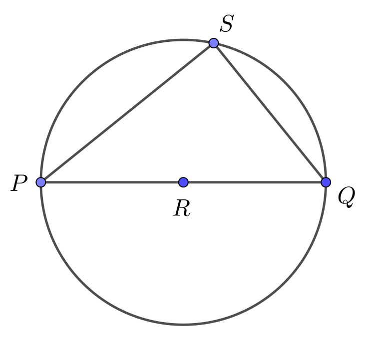
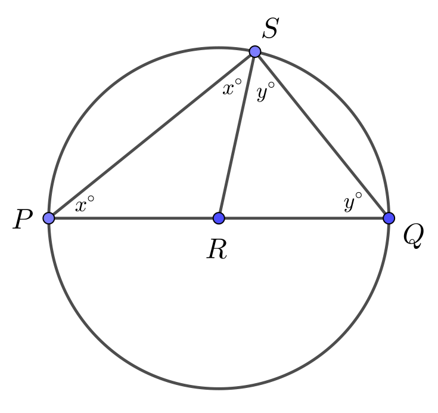

Problem of the Week
Problem E and Solution
Angled III
Problem
In the circle with centre \(R\) below, \(PQ\) is a diameter. Point \(S\) is a point on the circumference of the circle other than \(P\) or \(Q\).
Determine the measure of \(\angle PSQ\).

Solution
Join \(S\) to the centre \(R\). Since \(RP\), \(RQ\) and \(RS\) are radii of the circle, \(RP=RQ=RS\).
Since \(RP=RS\), \(\triangle PRS\) is isosceles and \(\angle RPS = \angle RSP = x^{\circ}\).
Since \(RQ=RS\), \(\triangle QRS\) is isosceles and \(\angle RQS = \angle RSQ = y^{\circ}\).
This new information is marked on the following diagram.

The angles in a triangle add to \(180^{\circ}\), so in \(\triangle PQS\) \[\begin{aligned} \large \angle PSQ + \angle QPS + \angle PQS &=&180^{\circ}\\ (x^{\circ}+y^{\circ})+x^{\circ}+y^{\circ}&=&180^{\circ}\\ 2(x^{\circ}+y^{\circ})&=&180^{\circ}\\ x^{\circ}+y^{\circ}&=&90^{\circ}\\\end{aligned}\]
But \(\angle PSQ=x^{\circ}+y^{\circ}\), so \(\angle PSQ=90^{\circ}\).
This result is often expressed as a theorem for circles:
An angle(\(\angle PSQ\)) inscribed in a circle by a diameter (\(PQ\)) of the circle is \(90^{\circ}\).